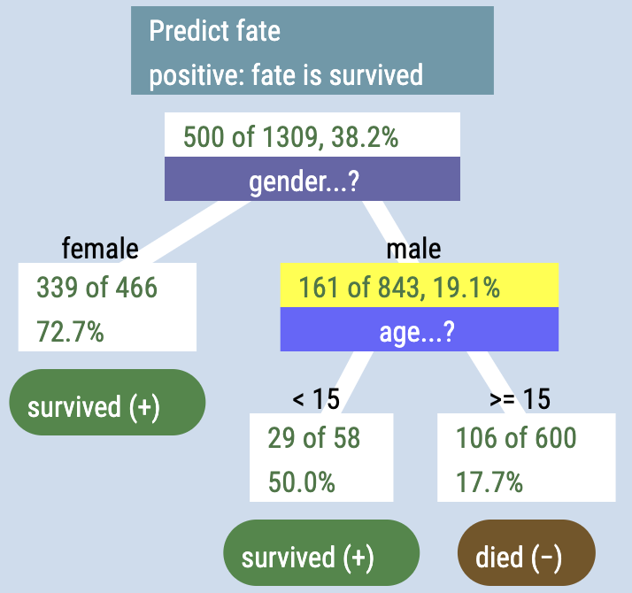
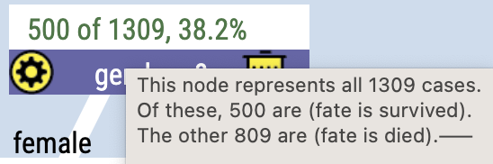
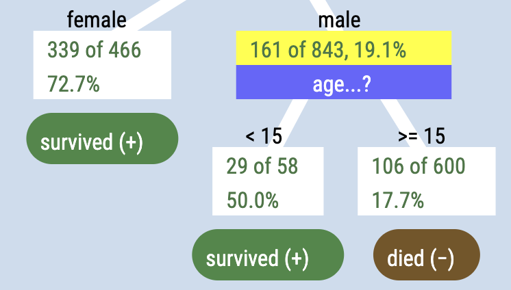

Anatomy of a tree
What does an Arbor tree look like? How do you read it? Let’s look at an example. This tree shows data from a famous dataset about the 1309 passengers aboard the Titanic. We will explore what seems to affect whether the passengers survived.

First of all, this tree—like most trees in data analysis—is upside-down. The root and trunk are at the top, and the leaves are at the bottom.
The root node
So: way up at the top, the “root” block, the root node, looks like this:
The first horizontal “stripe” tells us what attribute we are trying to predict. In this dataset, it’s called fate. (The value of fate is either survived or died.)
The second stripe tells us that we will consider survived to be the “positive” result. That seems obvious, but in many medical contexts, a “positive” test means that you have the disease.
The trunk node
Just below the root is the trunk. That block, that node, also has two stripes.
The top one tells you that 500 of the 1309 people—38.2% of them—survived. You know it’s survived because of what it says in the root. But if you forget, or get confused, you can always hover over that node to see details:

The bottom stripe sets up a branching. In this case, we ask about gender, and branch one way if the person is female and the other way if they are male.
Other nodes
Every other node is structured more or less the same as the trunk node: the first stripe shows how many people are positive, that is, how many survived, and the second shows the branching if there is one.
The key thing about the number stripe is that it only considers the people who get to that point in the tree. So although 38% of all people survived, the tree shows us that there is a big gender difference: 73% of the females survived, but only 19% of the males.
And then, among the males, the young males—under 15 years old—had a 50% survival rate compared to about 18% for males 15 or older.

Terminal nodes: the leaves
If a node has no branches coming out of it, it is a terminal node. Every terminal node has a “leaf” below it that is rounded instead of rectangular. The leaf shows a prediction for the fate of the people in that category.
So for the females, our best guess is that they will survive. For older males, our best guess is that they will die.
For the young males, under 15, with a 50% survival rate, we’re predicting survival, although you can make a case that at 50% we shouldn’t predict. The other side of that argument is that they have a better chance than people in general (38%).
The links
Slanted white stripes, called links, connect nodes to their “children.” Every link has a label such as female or >= 15 so you can tell who that link applies to.
So: that’s how you read a tree! To learn how to make a tree, see the page about learning to drive.